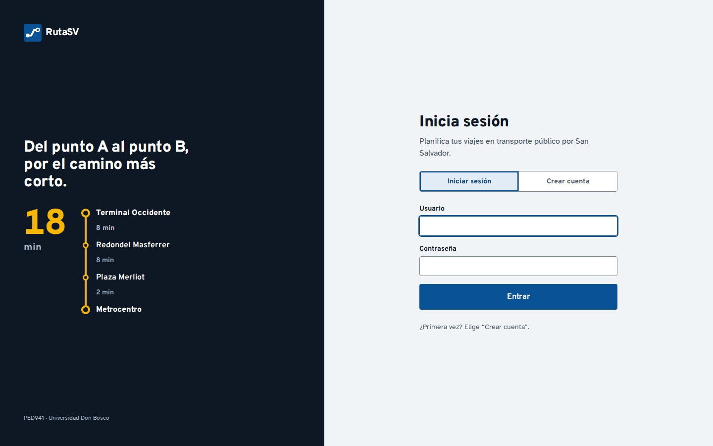
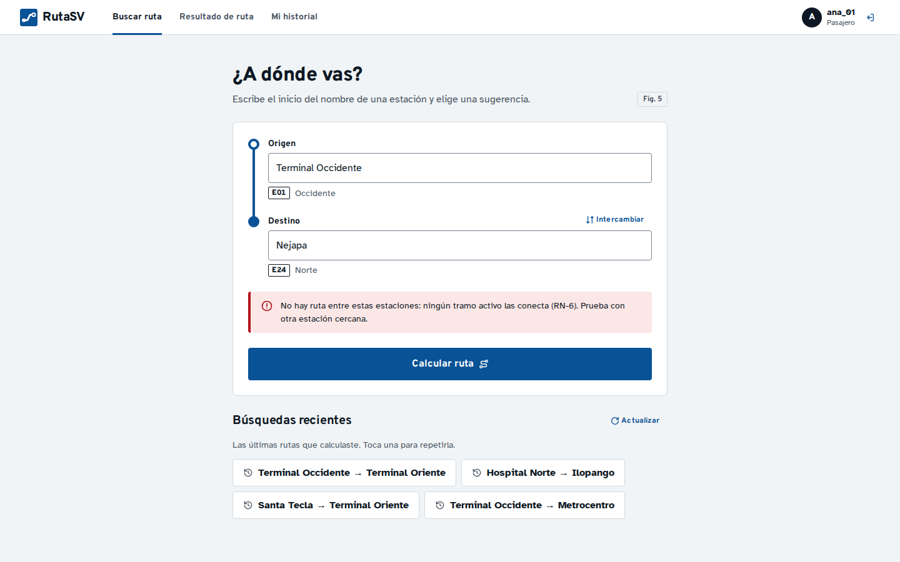
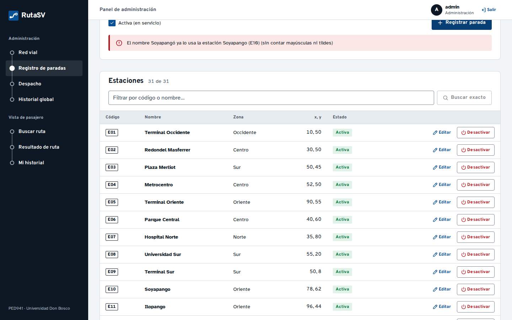
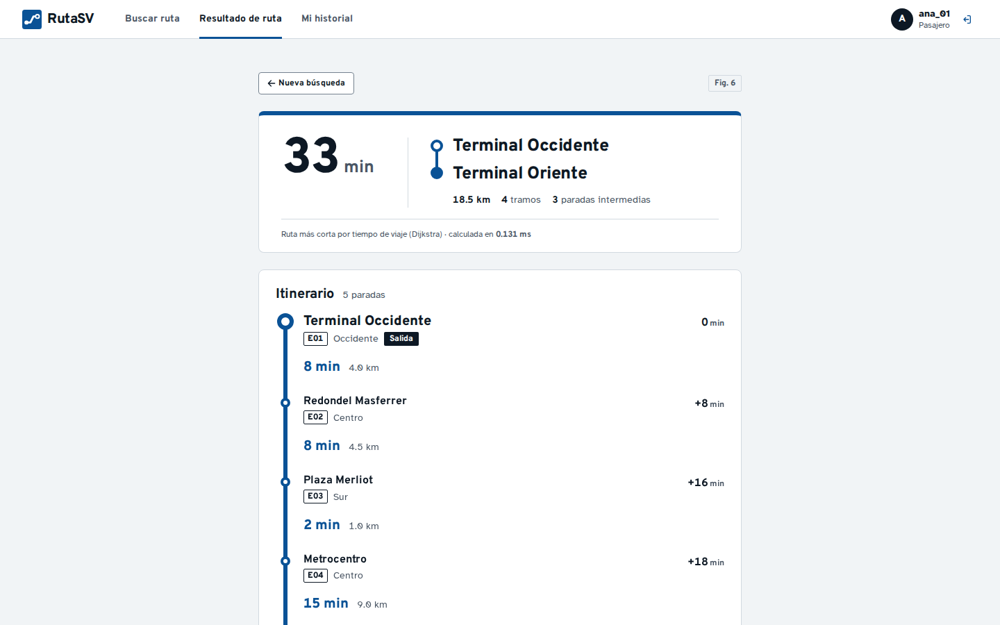
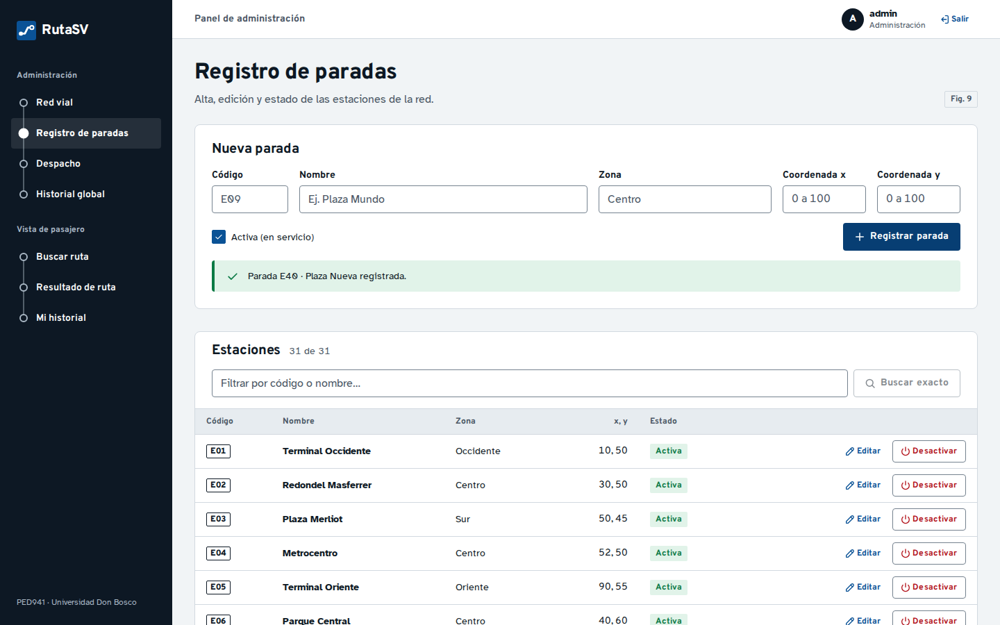
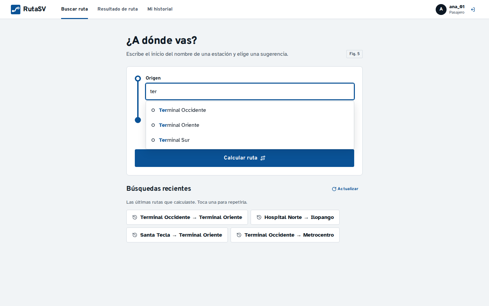
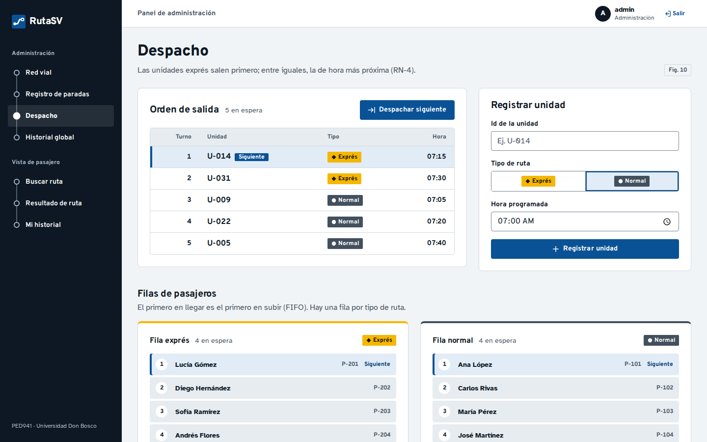
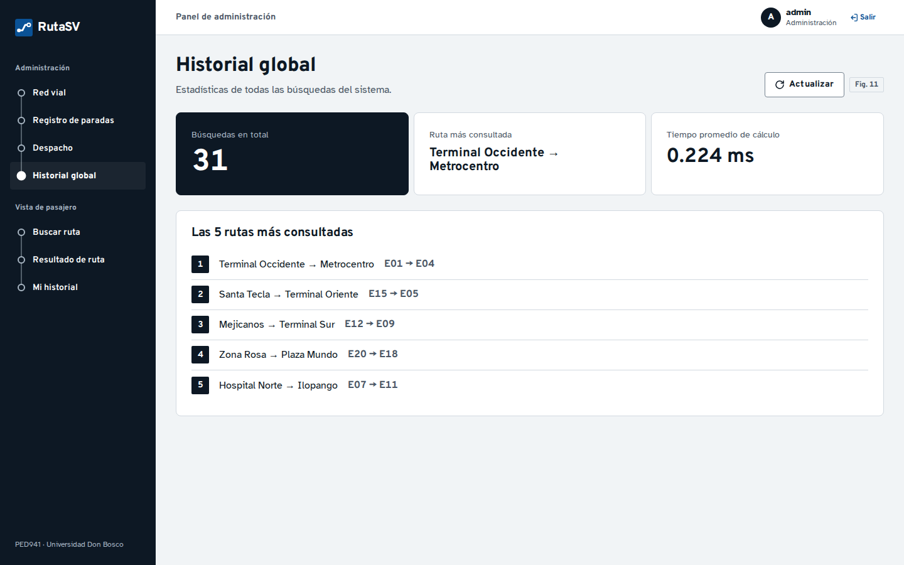

PED941 · Programación con Estructuras de Datos · Defensa final
RutaSV
Planificador de rutas de transporte público. Siete estructuras de datos propias, de punta a punta.
Francisco Josué Hernández MeléndezHM242655Ruta · líder
Yoselyn Guadalupe Aguilar RiveraAR253073Paradas
Leandro Alberto Valencia EscobarVE242685Búsqueda
Rubel Alberto Andrade CamposAC251900Terminal
Carlos Eduardo Saavedra VegaSV253275Historial
Docente: Ing. Carmen Celia Morales Samayoa · Universidad Don Bosco · Ciclo 02-2026 Lunes 30 de noviembre de 2026
Terminal Occidente → Metrocentro
18 min
Terminal OccidenteE01 · +8 min
Redondel MasferrerE02 · +8 min
Plaza MerliotE03 · +2 min
MetrocentroE04 · 9.5 km
Agenda · 45 minutos + 15 de preguntas
Del problema a la solución, sin saltos
1
Problema, alcance y arquitectura
Francisco
2
Demo en vivo
Todo el equipo
3
Casos borde en vivo
Rubel
4
Ruta: grafo, Dijkstra y pila
Francisco
5
Paradas: tabla hash
Yoselyn
6
Búsqueda: árbol AVL
Leandro
7
Terminal: montículo y cola
Rubel
8
Historial: lista dinámica
Carlos
9
Big-O del sistema · métricas
Leandro · Yoselyn
10
Calidad del código
Rubel
11
Bitácora: de la Fase 1 a la Fase 3
Carlos y cada integrante
12
Limitaciones y mejoras
Leandro
13
Conclusiones y rúbrica
Francisco
Total ≈ 42 min · Francisco 12 · Yoselyn 6 · Leandro 5.5 · Rubel 6.5 · Carlos 5.5 (+ su parte en la demo)
El problema
¿Cuál es el camino más rápido?
30 estaciones y 83 tramos: muchos caminos posibles.
El tramo directo no siempre es el más rápido.
La terminal debe despachar unidades y atender filas en orden justo.
RutaSV
Calcula la ruta en minutos, administra la red y la terminal, y recuerda lo que busca cada usuario.
Red de la demo: data/estaciones.csv y data/tramos.csv (datos sintéticos). Punteadas: estaciones inactivas.
Requisitos y alcance
Cinco tareas núcleo, una por rol
Ruta más rápida en minutos RN-2 · RN-6
Alta, edición y activación de paradas RN-1
Autocompletar estaciones por prefijo
Despacho de unidades y filas FIFO RN-4 · RN-5
Historial y top 5 de rutas RN-7
30estaciones
83tramos dirigidos
2roles: pasajero y admin
7estructuras propias
0 colecciones de java.utilguardan datos del dominio
Extras que no pedía la Fase 1: login con roles, mapa de la red, búsquedas recientes, top 5 y mediciones propias.
Arquitectura
Por capas, un módulo por rol
ArquitecturaTest nucleo no depende de nadie · cada módulo depende solo de nucleo · solo app conoce a todos · el core no conoce HTTP
Qué estructura resuelve qué
Siete estructuras, usadas en todo el sistema
Estructura
auth
ruta
paradas
búsq.
terminal
historial
Grafo (lista de adyacencia)
Pila enlazada
Tabla hash
Árbol AVL
Montículo binario
Cola FIFO enlazada
Lista dinámica
Cambió desde la Fase 1
Adaptadores Temporal → borrados; genéricas en nucleo/impl
Autocompletado con AVL propio, no TreeMap
Una fila FIFO por tipo de ruta, no por unidad
Top 5 con montículo acotado de 5
EN VIVOFrancisco comparte pantalla · cada rol narra su parte
Demo en vivo
Entrar como ana_01 o crear cuentaLeandro
Escribir ter: tres terminalesLeandro
T. Occidente → T. Oriente: 33 min, no 45Francisco
Mi historial y búsquedas recientesCarlos
Admin: red vial y top 5 de rutasCarlos
Paradas: registrar, editar, desactivarYoselyn
Terminal: despachar U-014 y atender la filaRubel
# en la raíz del repo $ ./demo.sh --limpio # → http://localhost:5173 # claves en .demo-data/.claves
Usuarios: adminana_01luis.msofia-r Si el 7070 está ocupado: RUTASV_PORT=7071 ./demo.sh

Pantalla de inicio: aquí empieza la demo
Robustez · pruébenlo en vivo
Entradas malas: mensaje claro, nunca un 500
Entrada
Qué responde
HTTP
Origen = destino
"El origen y el destino son la misma estación"
400
Destino Nejapa, Quezaltepeque o Aguilares
No hay ruta: grupo aislado (RN-6)
404
Apopa, San Jacinto, Hospital Rosales
Inactivas: no se sugieren; Dijkstra las salta
400
Tramo de 0, 1441 o 2.5 minutos
Minutos enteros entre 1 y 1440
400
"Soyapangó" o código repetido
Ya existe: se compara sin tildes
400
Código con ;> o espacios · JSON vacío
Rechazado antes de tocar los archivos
400
Despachar con la cola vacía · usuario repetido
Conflicto con el estado actual
409
Pasajero entra a /admin
Falta rol ADMIN (RN-1)
403

Sin ruta (RN-6)

Nombre repetido sin tildes
Ruta · grafo dirigido y ponderado
La red es un grafo con listas de adyacencia
Una TablaHash de código → Lista de tramos salientes.
E01 → E02·8 → E15·9 → E27·10 → E05·45
E02 → E01·8 → E03·8 → E06·5 → E20·7
E04 → E03·2 → E05·15 → E17·8 → E22·6 → E29·9
peso = minutos (RN-2) · un tramo por sentido (RN-3)
O(1)estacion(código): la tabla hash
O(1) + O(grado)vecinos(código)
¿Por qué grafo y no árbol? La red tiene ciclos y varios caminos; un árbol solo tiene uno. ¿Por qué lista y no matriz? 83 tramos en 30 estaciones (≈ 2.8 por estación): la matriz gastaría O(V²).
Ruta · Dijkstra con montículo y pila
E01 → E04 paso a paso
Ruta · Big-O y alternativas descartadas
O((V + E) log V) y por qué no otro algoritmo
Operación
Costo
Dijkstra (montículo binario)
O((V+E) log V)
Reconstruir con la pila
O(V)
apilar · desapilar · cima
O(1)
peso · anterior · cerradas (tablas hash)
O(1) prom.
BFS: minimiza saltos, no minutos.
Bellman-Ford: O(V·E); los pesos negativos no existen (RN-2).
Dijkstra con arreglo: O(V²), peor en una red dispersa.
A*: ya hay coordenadas; queda como mejora.

Terminal Occidente → Terminal Oriente: 33 min por el centro
Paradas · tabla hash con encadenamiento
Insertar, chocar y duplicar
Valores reales de String.hashCode(). En el código m empieza en 16 (caben 12; el 13.º duplica); aquí m = 4 para que quepa.
Paradas · dónde se usa y cuánto cuesta
El directorio de estaciones busca por clave exacta
Operación
Promedio
Peor
poner · obtener · contiene · eliminar
O(1)
O(n)
rehash (duplicar)
O(n) → O(1) amort.
O(n)
claves() en orden de inserción
O(n)
O(n)
¿Tabla hash o árbol? Código o nombre exacto: O(1) contra O(log n). El orden alfabético lo da el AVL.
¿Encadenamiento o sondeo lineal? Borrar no necesita marcas y no se degrada con altas y bajas.
Dos índices: por código y por nombre sin tildes. Por eso "Soyapangó" choca con "Soyapango".

Registro de paradas: alta, edición y activación (RN-1)
Búsqueda · árbol AVL
Insertar en orden sin perder el balance
fe = altura izquierda − altura derecha. Si llega a ±2, se rota.
Sin rotar, nombres en orden forman una lista: buscar sería O(n).
Con rotaciones (LL, RR, LR, RL) la altura queda en O(log n).
O(L log n)insertar y buscar · L = largo del nombre
Búsqueda · autocompletado por prefijo
"ter" → las tres terminales, podando ramas
¿Tabla hash? No puede listar "todo lo que empieza con ter" sin recorrerla entera.
¿Trie? O(L + k), pero un nodo por letra; no estaba en el temario base.

Lo que ve el pasajero al escribir "ter"
O(L log n + k)conPrefijo · k = sugerencias
Terminal · montículo binario (RN-4)
Exprés primero, luego la hora, luego el id
el mismo montículo como arreglo
hijos de i: 2i+1 y 2i+2 · padre: (i−1)/2
Orden de despacho (Fig. 10)
U-014 · U-031 · U-009 · U-022 · U-005
O(log n)insertar y extraer
Terminal · cola FIFO de abordaje (RN-5)
El primero en llegar es el primero en subir
Operación
Costo
encolar · desencolar (ColaEnlazada)
O(1)
¿pasajero ya está en una fila? (TablaHash)
O(1) prom.
verOrdenDespacho sobre una copia
O(n log n)

Despacho y filas por tipo de ruta
¿Montículo o lista ordenada? Insertar ordenado en lista es O(n); en el montículo, O(log n).
¿Cola enlazada o arreglo? Sin mover elementos ni redimensionar.
Historial · lista dinámica (arreglo que crece)
Cuando se llena, duplica la capacidad
O(1) amortizadoagregar · obtener(i) es O(1)
¿Lista enlazada? El historial solo crece al final y se recorre en orden: el arreglo es O(1) amortizado y tiene mejor localidad de memoria.
Historial · estadísticas y la tabla con orden (PR #41)
Mi historial, top 5 y claves en orden
Los nodos también forman una lista doble en orden de inserción (#41).
Mi historial
TablaHash usuario → lista: O(1) + O(k)
Guardar una ruta
Se agrega una línea al archivo: O(1); antes se reescribía todo, O(n).
Top 5
Conteo por par en TablaHash y montículo acotado de 5: O(P log 5)
claves()
Recorre solo los n pares vivos: O(n), no O(m) cubos.

Historial global y top 5 de rutas
Big-O · resumen del sistema
Cada operación con su costo
Estructura
Operación
Costo
Dónde
Grafo
estacion(código) · vecinos
O(1) · O(1) + O(grado)
Ruta
Dijkstra + montículo
ruta más rápida
O((V + E) log V)
Ruta
Pila
apilar · desapilar → reconstruir
O(1) → O(V)
Ruta
Tabla hash
poner · obtener · eliminar
O(1) prom. · O(n) peor
todos
Árbol AVL
insertar · buscar · conPrefijo
O(L log n) · O(L log n + k)
Búsqueda
Montículo
insertar · extraer · ver orden (copia)
O(log n) · O(n log n)
Terminal
Cola enlazada
encolar · desencolar
O(1)
Terminal
Lista dinámica
agregar · obtener(i)
O(1) amort. · O(1)
Historial
Estadísticas
mi historial · top 5
O(1) + O(k) · O(P log 5)
Historial
V estaciones · E tramos · n elementos · L largo del nombre · k resultados · P pares origen-destino
Métricas propias · mediana de 7 corridas
Las mediciones confirman el Big-O
Tabla hash contra búsqueda lineal
Árbol AVL: casi plano de 1 000 a 500 000
Dijkstra en mallas
Montículo: n inserciones + n extracciones
Calidad del código
Contratos, pruebas, CI y revisión
268pruebas: 257 en core + 11 en api
0 fallos1 omitida: la medición, bajo demanda
Contratos abstractos (MapaContractTest…) corren contra cada implementación.
El árbol no tiene ciclos; la matriz es O(V²) con E ≈ 3V
Ruta más rápida
Dijkstra + montículo
BFS · Bellman-Ford · Dijkstra con arreglo
BFS ignora minutos; B-F O(V·E); arreglo O(V²)
Reconstruir el camino
Pila enlazada
Recorrer hacia atrás e invertir
La pila invierte en O(V) sin un paso extra
Directorio por clave
Tabla hash encadenada
Árbol · sondeo lineal
O(log n) sin necesitar orden; el sondeo necesita marcas al borrar
Autocompletar
Árbol AVL
ABB · tabla hash · trie · TreeMap
ABB degenera; hash sin orden; trie un nodo por letra; TreeMap no es propio
Despacho RN-4
Montículo binario
Lista ordenada
Insertar ordenado es O(n)
Fila RN-5
Cola enlazada
Arreglo
Desencolar movería elementos o pediría redimensionar
Historial
Lista dinámica
Lista enlazada
Solo crece al final; el arreglo da O(1) por índice y mejor localidad
Top 5
Montículo acotado de 5
Montículo completo · ordenar todo
Memoria O(1) en vez de O(P); tiempo O(P log 5)
Respaldo
Pseudocódigo de Dijkstra (sección 5.1)
CalcularRuta(red, origen, destino)
si origen o destino no existen o están inactivos: devolver SIN_RUTA // RN-6
peso, km, anterior, cerrada ← tablas hash vacías
cola ← montículo (menor peso primero; si empatan, menor código)
peso[origen] ← 0 ; km[origen] ← 0 ; cola.insertar((origen, 0))
mientras cola no esté vacía:
(actual, p) ← cola.extraer() // O(log V)
si actual está en cerrada: continuar // copia vieja
cerrada[actual] ← verdadero
si actual = destino: salir // corte temprano
para cada (vecino, minutos, distancia) en red.vecinos(actual):
si vecino está cerrado o inactivo: continuar
nuevo ← p + minutos
si vecino no tiene peso o nuevo < peso[vecino]:
peso[vecino] ← nuevo ; km[vecino] ← km[actual] + distancia
anterior[vecino] ← actual ; cola.insertar((vecino, nuevo))
si destino no tiene peso: devolver SIN_RUTA
pila ← vacía ; e ← destino
mientras e ≠ nulo: pila.apilar(e) ; e ← anterior[e] // destino → origen
ruta ← lista vacía
mientras pila no esté vacía: ruta.agregar(pila.desapilar()) // origen → destino
devolver (ruta, peso[destino], km[destino])
Respaldo
Pruebas por módulo (mvn -o test, 25/11/2026)
Paquete
Casos
Ejemplos
nucleo
112
contratos, ListaDinamica, TablaHash, Monticulo
app
46
ArquitecturaTest, DatosDemoTest, robustez
auth
45
login, sesiones, roles
terminal
44
DespachoFigura10Test, filas
búsqueda
35
ArbolAvlTest, Normalizador
paradas
32
DirectorioEstaciones, CargadorCSV
ruta
32
DijkstraTest, grafo
historial
22
HistorialService, Estadisticas
rendimiento
1
omitida salvo -Drendimiento=true
api
11
ServidorTest: pedidos mal formados → 400
268pruebas ejecutadas · 0 fallos · 1 omitido
257 métodos @Test en core: las pruebas de contrato abstractas (ListaContractTest, MapaContractTest…) se ejecutan una vez por cada implementación.
$ mvn -B verify # core + api, igual que el CI
Respaldo · cómo llegamos aquí
Tres fases, un mismo sistema
100/100
Fase 1
Análisis y diseño: requisitos, reglas, estructuras elegidas y Big-O teórico.
100/100
Fase 2
Sistema funcional: React + API + core. Adaptadores temporales mientras cada rol escribía su estructura.
Fase 3 · sistema terminado
Las 7 estructuras propias en uso, robustez ante entradas malas, demo y mediciones. 7 PR del 24 al 25 de noviembre.
#40 TablaHash propia; adiós MapaTemporalYoselyn
#41 TablaHash con orden de inserciónCarlos
#42 Estructuras a nucleo, sin clases TemporalFrancisco
#43 Editar y activar paradas; 500 → 400Francisco
#44 Red de 30 estaciones y datos de demoFrancisco
#45 README, guías y medicionesFrancisco
#46 Detalles hallados al grabar la demoFrancisco
30/11 Defensa finalhoy
Respaldo · preguntas probables 1–7 (respuestas en las notas, tecla N)
Anticipamos estas preguntas
#
Pregunta
Responde
Apoyo
1
¿Por qué esta estructura y no otra? (ej.: ¿árbol o grafo?)
Cada rol
2
¿Qué alternativas descartaron y por qué?
Cada rol
3
¿Qué cambió desde la Fase 1 y qué lo impulsó?
Carlos
4
Complejidad de la ruta más corta: ¿por qué y qué recursos usa?
Francisco
5
Mejor, promedio y peor caso: ¿coincide con lo medido?
Yoselyn · Leandro
6
¿Qué pasa con un valor fuera de rango o inesperado?
Rubel
7
¿Qué puede y qué no puede hacer el usuario? ¿Secuencia de uso?
Leandro
Respaldo · preguntas probables 8–14 (respuestas en las notas, tecla N)
Anticipamos estas preguntas
#
Pregunta
Responde
Apoyo
8
¿De dónde surgieron las ideas y cómo resultó el proyecto?
Francisco
9
¿En qué participó usted?
Cada uno
10
¿Limitaciones y cómo lo escalarían?
Leandro
11
¿Dificultades, causa y aprendizaje? (sin culpar)
Carlos
12
¿Nomenclatura y versionamiento?
Rubel
13
Pregunta inesperada
Quien sea
14
¿El grafo es fijo o crece?
Francisco · Yoselyn
→ / espacio avanzar · ← volver · F pantalla completa · O vista general · N notas · P ventana de notas